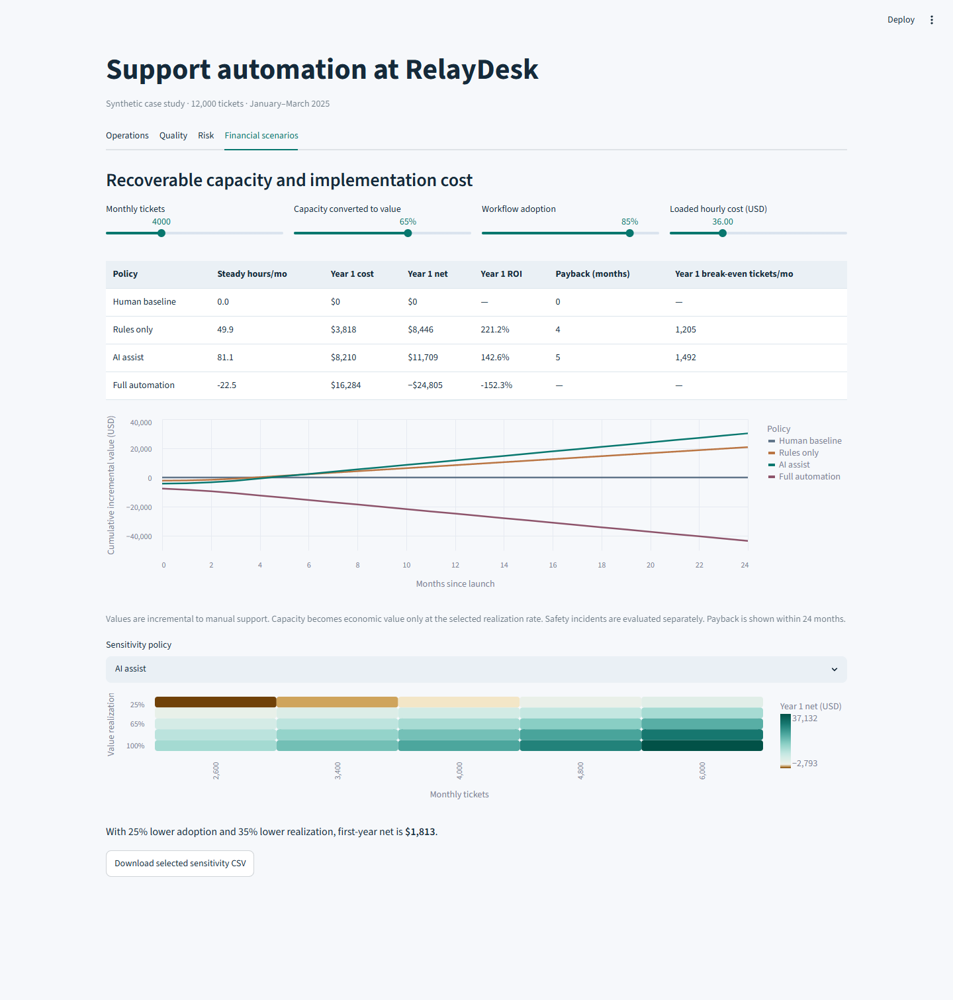

The decision
RelayDesk’s support team wants to reclaim agent time without bypassing specialist review. The proposed Reporting-only pilot starts with two English-language requests: exporting a saved report and pausing a report schedule. Agents retain sending authority. Receipt and pending-invite drafts are candidates for later expansion.
What the replay found
The study uses 12,000 synthetic tickets from January–March 2025 and compares all four policies on 4,000 March tickets held back for testing. The local article matcher retrieves approved knowledge-base text. Escalation rules and confidence thresholds influence whether a case gets a draft or goes to an agent.
| Policy | Auto-sends | Draft offers | Escalations bypassed |
|---|---|---|---|
| Manual | 0 | 0 | 0 |
| Rules only | 494 | 0 | 23 |
| Agent review | 0 | 2,100 | 0 |
| Full automation | 3,850 | 0 | 1,764 |
Of the 2,100 draft offers, 1,798 matched an eligible case and the correct article. Seventy-three drafts reached agent review despite requiring escalation. The replay shows where review is needed. It cannot measure how often real agents would catch those cases.
The economics depend on using the time
In the broader replay scenario, 4,000 tickets per month, 85% adoption, a $36 hourly cost and 65% of freed-up time converted into economic value yield $11,709 in year-one incremental net value and payback in month five. At 25% conversion, modeled year-one net value is −$548. The model includes setup, operating costs and a four-month adoption ramp. The Reporting-only pilot needs a separate estimate based on its volume, case mix and staffing.
What to verify in a pilot
Start with a shadow study and then a controlled agent pilot. Track reviewer catches, handling time, specialist routing and seven-day outcomes together. Review any scope violation before expanding eligibility.
Limits of the evidence
The ticket replay and financial inputs are synthetic. The prototype evaluates article selection and routing. Free-form answer quality, agent review behavior, multilingual performance and realized savings require live validation.
Dashboard preview


Enlarge dashboard